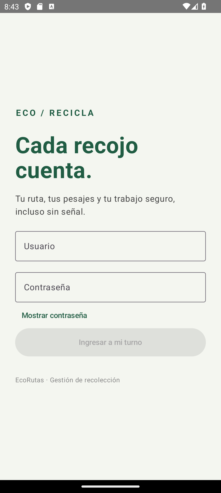
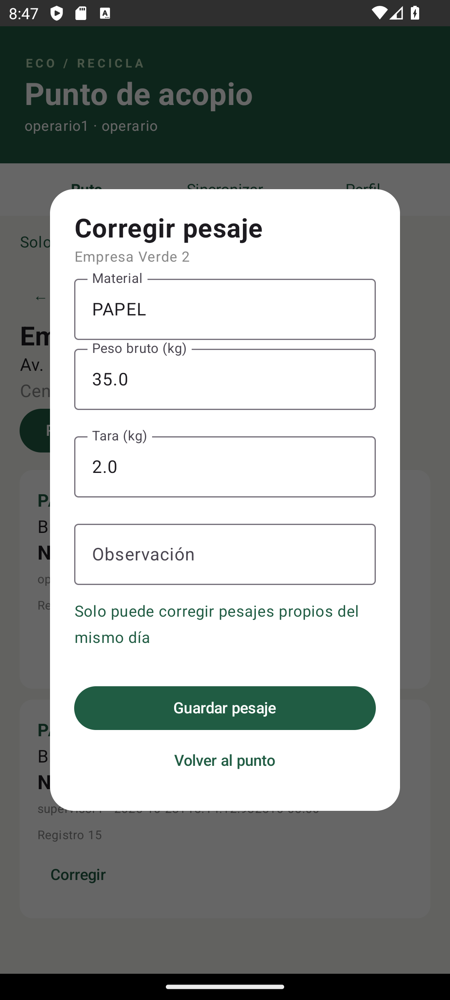
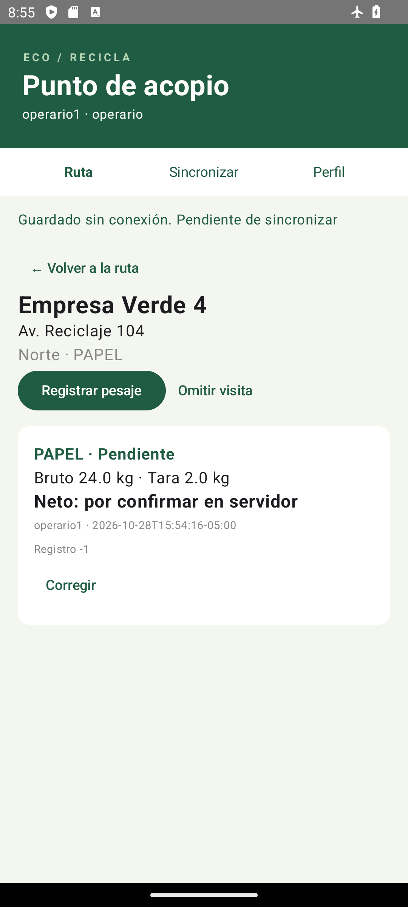
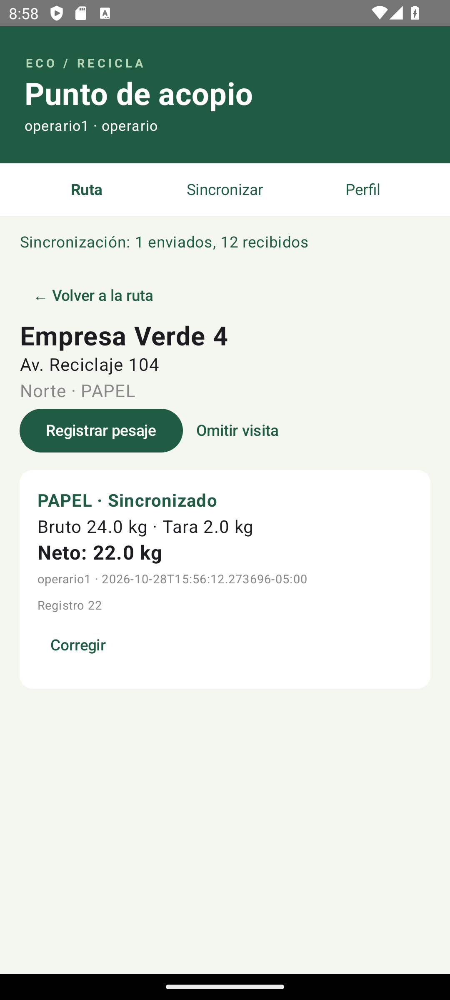
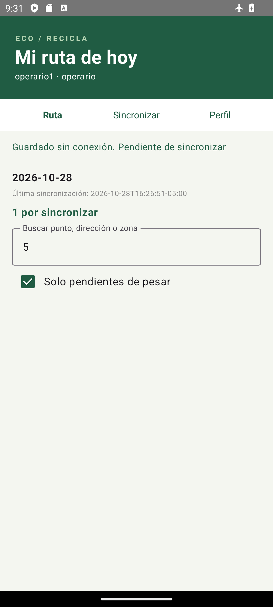
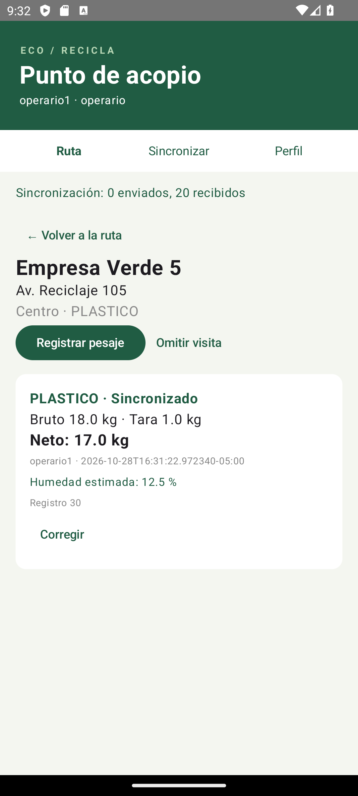

EcoRecicla registra la recolección de residuos en puntos de acopio. El servicio custodia los datos y aplica la seguridad; la aplicación conserva el trabajo del operario cuando no dispone de señal y sincroniza al recuperar la conexión.
La interfaz observa Flow de la base local. Las escrituras se guardan primero en el equipo. El servidor calcula el peso neto y decide autorización y reglas. Docker Compose levanta PostgreSQL y el servicio con un comando. La sesión Android se cifra con AES/GCM y una clave no exportable de Android Keystore.
| Requisito | Implementación y verificación |
|---|---|
| RN-01 · ruta cerrada | 409 en el servicio; bloqueo pesimista y refresco JPA evitan una carrera con el cierre. |
| RN-02 · propio y mismo día | 403 al operario; el supervisor corrige por privilegio. Zona de negocio America/Lima. |
| RN-03 · neto positivo | Bruto menos tara en servidor. 400 con errores por campo; el cliente no envía el neto. |
| RN-04 · cierre completo | 409 indica cantidad de puntos sin pesaje válido ni omisión. |
| Roles y privilegios | Validación en servicio. Ocultar botones es experiencia de usuario, no la barrera de seguridad. |
| Persistencia offline | IDs negativos, filas por usuario, operaciones pendientes y reconciliación transaccional. |
| Contrato HTTP | Paginación común; errores con timestamp/status/error/message/path/validationErrors. |
Propósito: demostrar que el acceso depende de una sesión válida y que la restricción RN-02 se hace cumplir en el servicio.


Capturas del emulador Android: formulario de acceso y respuesta de autorización conservando el turno activo.
Propósito: registrar sin red y recuperar consistencia sin duplicar el trabajo.


La verificación final registra 18 pruebas del backend y 18 pruebas móviles, sin fallos. Las pruebas se ejecutan sobre el código real. El backend usa PostgreSQL de Docker; las pruebas comunes móviles emplean fakes controlados y la prueba de persistencia usa SQLite real en memoria.
| Capa | Casos cubiertos |
|---|---|
| EcoAPI | Login, token ausente/alterado, 403 por privilegio, semillas, paginación, 400 por campo, 404, RN-01..04, alta idempotente y anulación 204. |
| commonTest | Conversión DTO, 401/403, alta offline, IDs sin colisión, reconexión, orden CREATE → UPDATE → ANULATE → descarga y doble sincronización. |
| Regresiones | Respuesta de creación perdida seguida de corrección offline; ruta cargada en JPA antes de un cierre concurrente. |
| SQLite | Tabla vacía, siguiente ID negativo, aislamiento entre usuarios y consulta observable. |
npx newman run docs/api/EcoAPI.postman_collection.json -r cli Requests: 14 ejecutadas / 0 fallidas Assertions: 18 ejecutadas / 0 fallidas Casos: login, 401, 403, 400, 404, 409, alta, corrección, anulación 204
La colección encadena tokens e identificadores mediante variables. Los tokens no se incorporan al repositorio. El archivo original de salida y los logs de pruebas se adjuntan en docs/entrega/logs.
docker compose up --build .\mvnw.cmd test .\gradlew.bat :shared:testAndroidHostTest :composeApp:assembleDebug
EcoAPI: github.com/17Yerdna/EcoAPI
EcoRutas: github.com/17Yerdna/EcoRutas
| Repositorio | PR de las tres fases base |
|---|---|
| EcoAPI | #2 Infraestructura · #4 Persistencia · #6 API, JWT y reglas |
| EcoRutas | #2 Infraestructura · #4 Offline · #6 Pantallas y sesión |
Los tres PR base por repositorio se fusionaron a develop con merge commits. Las funcionalidades se desarrollaron en ramas, manteniendo main para la entrega. Cada cambio SC tiene su rama identificable y tres incrementos reales: prueba, implementación y verificación/documentación.
Los grafos completos se adjuntan como git-ecoapi.txt y git-ecorutas.txt. La entrega final se identifica en ambos repositorios mediante v1.0-unidad2.
EcoAPI / v1.0-unidad2
EcoRutas / v1.0-unidad2
CONTEXTO_PARA_IA.md y tasks/handoff.md conservan decisiones, comandos, resultados, ramas y siguiente tarea. Otra guía debe verificar Git y las pruebas antes de continuar.
Salida real de git log --graph --oneline --all. Los mensajes de merge enlazan cada rama con su PR.
* a58cee8 Merge pull request #10 from 17Yerdna/sc-c-mestanza |\ | * 37c0272 docs(sc-c): registrar validación y recorrido persistente | * 9fa56e6 feat(sc-c): persistir humedad estimada con validación | * d02aeeb test(sc-c): exigir humedad persistida y validada por HTTP * | d531e23 Merge pull request #8 from 17Yerdna/sc-b-mestanza |\| | * 65cccfc docs(sc-b): registrar pruebas HTTP del auditor | * fbd8906 feat(sc-b): incorporar AUDITOR con privilegios solo de lectura | * 390674a test(sc-b): exigir lectura sin escritura para AUDITOR |/ * 0542571 Merge pull request #6 from 17Yerdna/feature/api-pesajes |\ | * a95ba25 docs(api): describir contrato y colección de evaluación | * 74a21b7 fix(reglas): refrescar ruta bloqueada y conservar alcance del supervisor | * 5285695 feat(api): proteger operaciones con JWT y reglas verificadas * | 3eefae3 Merge pull request #4 from 17Yerdna/feature/persistencia |\| | * 142fab8 feat(datos): persistir rutas y pesajes con semillas relacionales * | 3ebd4e2 Merge pull request #2 from 17Yerdna/feature/infraestructura |\| | * 89cfd86 feat(base): iniciar Spring Boot y PostgreSQL con Docker |/ * 486ab98 docs(plan): registrar diseño y plan del examen EcoRecicla
* 8530076 Merge pull request #14 from 17Yerdna/sc-d-mestanza |\ | * 360cc74 docs(sc-d): registrar prueba del contador observable | * be8f221 feat(sc-d): observar pendientes desde SQLite y mostrar distintivo | * b03f638 test(sc-d): exigir contador observable tras alta y sincronización * | 0f24f99 Merge pull request #12 from 17Yerdna/sc-c-mestanza |\| | * 3b0be93 docs(sc-c): documentar migración y pruebas de humedad | * e75283d feat(sc-c): llevar humedad por contrato, SQLite y pantallas | * 8fdb24c test(sc-c): conservar humedad en DTO y dominio * | 59d1653 Merge pull request #10 from 17Yerdna/sc-b-mestanza |\| | * 88f3041 docs(sc-b): describir acceso y verificación de lectura | * 86faea8 feat(sc-b): presentar acceso de lectura sin comparar roles | * 149dfdc test(sc-b): verificar acceso de lectura derivado de privilegios * | 27b6013 Merge pull request #8 from 17Yerdna/sc-a-mestanza |\| | * 86db027 docs(sc-a): registrar consulta y verificación offline | * 228ae46 feat(sc-a): filtrar ruta desde consultas locales observables | * 3b77d29 test(sc-a): definir filtro local combinado de búsqueda y pendientes |/ * 903e558 Merge pull request #6 from 17Yerdna/feature/pantallas |\ | * d11fdf4 feat(app): integrar pantallas y sesión Android cifrada * | b68815a Merge pull request #4 from 17Yerdna/feature/persistencia-offline |\| | * eb10835 feat(offline): persistir pesajes y reconciliar sincronización segura * | 9fd289f Merge pull request #2 from 17Yerdna/feature/infraestructura |\| | * a72c1f3 feat(base): configurar proyecto KMP Android de EcoRutas |/
Por indicación del estudiante se implementaron y verificaron los cuatro escenarios, manteniendo sus cambios versionados y verificables por separado.
| Cambio | Recorrido de implementación |
|---|---|
| SC-A | Filtro “Solo pendientes de pesar” combinado con búsqueda, resuelto en SQLDelight y observable desde el ViewModel. Funciona sin conexión. |
| SC-B | Rol AUDITOR con PUNTO_LEER y PESAJE_LEER. El servicio rechaza escrituras y la app obtiene permisos desde la sesión, sin if por nombre de rol. |
| SC-C | Humedad estimada en migración PostgreSQL, entidad, contrato, DTO, dominio, SQLite, formulario y detalle. |
| SC-D | Distintivo del número de pesajes pendientes desde una consulta observable de SQLite, no un contador manual. |
sc-a-mestanza, sc-b-mestanza, sc-c-mestanza y sc-d-mestanza permiten examinar los incrementos. SC-B y SC-C también atraviesan EcoAPI.
Un cambio se considera terminado solo cuando compila, su prueba específica pasa y la suite completa conserva el comportamiento base. Las salidas adjuntas permiten comprobar el resultado final.
Se combinó búsqueda por “5” con pendientes, se registró un pesaje sin red con humedad12.5% y se recuperó conectividad.


| Tema | Demostración con código propio |
|---|---|
| 1. Privilegios | EcoService.exigir; enviar petición con token válido y privilegio insuficiente. |
| 2. JWT | JwtService: claims, firma HMAC, expiración de una hora y parseSignedClaims. |
| 3. Token seguro | AlmacenSeguroAndroid: AES/GCM, Android Keystore y preferencias cifradas. |
| 4. Cabecera común | ApiClient.call incorpora bearer en una única ubicación. |
| 5. 401 y 403 | 401 limpia sesión activa y conserva pendientes; 403 muestra motivo y mantiene turno. |
| 6. Registro completo | Formulario → ViewModel → repositorio → SQLite → Ktor → servicio → PostgreSQL. |
| 7. Flow local | BaseLocal expone queries.asFlow; Compose observa StateFlow del ViewModel. |
| 8. ID negativo | Guardar sin red y mostrar -1; reconciliar con ID positivo en transacción. |
| 9. Orden de sync | Sincronizador serializado por Mutex: CREATE, UPDATE, ANULATE y descarga. |
| 10. Fakes | OfflineTest.Memoria/Remoto fuerzan fallo de red y verifican efectos persistidos. |
| 11. Validación | validationErrors viaja al estado y se muestra bajo peso bruto o tara. |
| 12. Nuevo rol | Migración AUDITOR, privilegios de lectura y controles UI derivados de esos permisos. |
| 13. Git | Mostrar issues, PR cerrados, grafos, ramas SC y etiqueta de entrega. |
Ensayo: elegir dos temas, abrir el archivo correspondiente y demostrar el comportamiento en el sistema. El informe acompaña la defensa; no sustituye la explicación del estudiante.